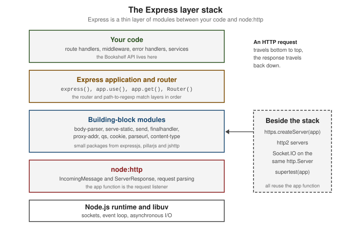

Introduction & Architecture
|
This content was generated with the assistance of AI and should be verified against the official documentation before being relied on in production. |
This page is written against Express 5.3 (npm express 5.3.0, published 2026-10-09; the Express 4 line is at 4.22.3) on
Node.js 24 or 26 LTS. Express 5 requires Node.js 18 or later, and Express 4 runs on very old runtimes (the support page
lists 0.10 as its floor). The facts were checked on 2026-10-29. The page explains what Express is made of and where it
fits, before the rest of the section builds the Bookshelf — a small books/authors/reviews service used as the running
scenario, the same domain as in the Node.js, NestJS, FastAPI and Next.js sections.
What Express is
Express describes itself as a fast, unopinionated, minimalist web framework for Node.js. In practice it is a thin layer
over the node:http module with three jobs:
-
Routing — choose a handler from the HTTP method and the URL path, with named parameters and wildcards.
-
Middleware — run a chain of functions of
(req, res, next)that read and change the request and response, in the order they were registered. -
Helpers — extend the Node.js request and response objects with conveniences such as
req.query,req.params,res.json(),res.redirect(),res.sendFile()and content negotiation.
Everything else — body parsing, sessions, authentication, validation, templating, databases — is an add-on. That is what "unopinionated" means: Express imposes no project layout, no ORM, no template engine and no dependency-injection container. A team assembles the stack, and the cost of that freedom is that conventions have to be agreed on and written down (see Project Structure & Configuration).
An Express application is a function. express() returns a function with the signature (req, res), which is exactly
what http.createServer() expects as a request listener. That single fact explains most of the architecture: the app
can be handed to http.createServer(), to https.createServer(), to a test client such as supertest, or to a serverless
adapter, and it can itself be mounted inside another app.
History
| When | What happened |
|---|---|
2010 |
TJ Holowaychuk creates Express on top of Connect, a middleware framework, taking inspiration from the Sinatra framework for Ruby. It quickly becomes the default way to write a web server in Node.js. |
2012 |
Express 3 adds many built-in middleware, all bundled with Connect. |
April 2014 |
Express 4.0 removes the dependency on Connect and strips almost all bundled middleware into separate packages. The router becomes its own concern, and the "bring your own middleware" model of today is established. Express 4 stays the dominant line for a decade. |
2014 to 2016 |
Maintenance passes from its creator to StrongLoop, then IBM, and the project joins the Node.js Foundation. |
2019 |
The Node.js Foundation and the JS Foundation merge into the OpenJS Foundation, which hosts Express today. |
2024-09-10 |
Express 5.0.0 is published after a very long beta. It is published under the |
2025-03-31 |
Express 5.1.0 becomes the first 5.x release on the |
2025-12-01 |
Express 5.2.0 and 5.2.1 are published, together with Express 4.22 updates. |
2026-10-09 |
Express 5.3.0 is published. Its |
The dates above come from the npm registry and the GitHub releases page. The project is governed by a Technical
Committee, with a security triage team, a documented threat model and a security policy; day-to-day work is done by
project captains who own individual repositories. At the time of writing the latest-4 dist-tag still points at 4.22.3,
and no Express 6 has been announced, so this section does not document one. See
Versions, Support & LTS for the release and support policy.
Source: expressjs/express: History.md
The module family
Express itself is small. Its package.json lists dozens of dependencies, but the ones that define its behaviour belong to
a handful of GitHub organizations:
-
expressjs — the framework and the middleware modules the project maintains (
express,body-parser,cors,multer,morgan,compression,cookie-parser,cookie-session,serve-index, and others). -
pillarjs — the low-level building blocks shared with other frameworks (
router,path-to-regexp,send,finalhandler,parseurl,cookies,csrf,resolve-path). -
jshttp — small HTTP utility libraries (
http-errors,content-type,mime-types,accepts,negotiator,proxy-addr,type-is,statuses,etag,fresh,range-parser,on-finished).
The modules that matter most for an application, with the versions Express 5.3.0 depends on:
| Module | Version range | Role in Express |
|---|---|---|
|
|
Holds the layers, matches the path and method, runs handlers, and handles |
|
8.x (through |
Compiles path strings such as |
|
|
Implements |
|
|
Implements |
|
|
Streams a file with ETag, |
|
|
The last-resort handler. It answers 404 when nothing handled the request and renders the default error response when a handler passed an error to |
|
|
Resolves the client address behind proxies according to the |
|
|
Parses nested query strings when the |
|
|
Parses and serialises cookie headers; used by |
Because these are ordinary npm packages, any of them can be used on its own, for instance finalhandler and router
inside a plain node:http server, or path-to-regexp in a build tool.
Source: Express: Utility modules
Utility modules
The official Utility modules page lists the pillarjs packages that Express and many other projects reuse:
| Package | Purpose |
|---|---|
|
Gets and sets HTTP cookies, with optional signing through Keygrip to prevent tampering. It works with plain |
|
Creates and verifies CSRF tokens, for building custom CSRF middleware. |
|
The final step that responds when no other handler has. |
|
Parses a request URL, caching the result so repeated calls are cheap. |
|
Turns an Express-style path such as |
|
Resolves a relative path against a root with validation, which is the basis of safe static file serving. |
|
A simple middleware-style router, usable without Express. |
|
Streams files as HTTP responses with range requests, conditional GET and events. |
The official middleware list (body-parser, cors, multer, morgan and the rest) is a different set; it is covered in Official Middleware Modules.
Source: Express: Utility modules
The layer stack
The following figure shows where each piece sits. Your code only touches the top layer. Everything beneath it is replaceable or reusable on its own, and Node.js and libuv do the sockets, parsing and event loop.

How a request flows through the stack
When a request arrives, node:http parses the request line and headers, creates an IncomingMessage and a
ServerResponse, and calls the app function. Express then adds its own helpers to both objects and hands them to the
router. The router keeps an ordered list of layers; each layer is either a middleware function (matched by path
prefix) or a route (matched by method and path). The router walks that list, calling next() to move on, until a
handler sends a response. If the list is exhausted, or an error is passed to next(err), finalhandler produces the
response.
The ordering rule is the most important thing to remember: a layer registered after the one that handles the request
never runs, and a body parser registered after the route that needs req.body does not help. Error-handling
middleware has four parameters (err, req, res, next) and is skipped on the success path; it must be registered after
the routes it protects. A default error handler (finalhandler) exists even when the application defines none.
Express 5 changed a few details of this flow compared with Express 4:
-
A handler that returns a rejected promise, or is an
asyncfunction that throws, has its error forwarded tonext()automatically. Express 4 did not, so every async handler needed atry/catchor a wrapper. -
req.queryis computed lazily through a getter; Express 4 ran a query-parsing middleware on every request. The default query parser setting issimplein Express 5 (it wasextendedin Express 4). -
Path syntax follows
path-to-regexp8: a bare*is no longer valid and must be a named wildcard such as/{*splat}; optional segments use braces; regular-expression sub-patterns in strings are no longer supported. -
express.urlencoded()defaults toextended: false, andreq.bodyisundefinedwhen no body parser matched.
The hello-world application below runs the whole flow with the smallest amount of code.
// bookshelf-api/server.js -- run with: node --watch server.js
import express from 'express';
const app = express();
app.use(express.json());
app.get('/api/v1/books/:id', (req, res) => {
res.json({ id: req.params.id, title: 'Placeholder title' });
});
app.use((req, res) => {
res.status(404).json({ error: 'Not found' });
});
app.use((err, req, res, next) => {
console.error(err);
res.status(500).json({ error: 'Internal server error' });
});
const server = app.listen(3000, (error) => {
if (error) {
throw error;
}
console.log('Bookshelf API listening on http://localhost:3000');
});
process.on('SIGTERM', () => server.close());Source: Express: Hello world
Express versus raw node:http
Everything Express does can be written against node:http. Seeing the same endpoint both ways shows what the layer buys
you.
// raw-http.js -- the same GET /api/v1/books/:id without Express
import http from 'node:http';
const server = http.createServer((req, res) => {
const url = new URL(req.url, `http://${req.headers.host}`);
const match = /^\/api\/v1\/books\/([^/]+)$/.exec(url.pathname);
if (req.method === 'GET' && match) {
res.writeHead(200, { 'Content-Type': 'application/json; charset=utf-8' });
res.end(JSON.stringify({ id: match[1], title: 'Placeholder title' }));
return;
}
res.writeHead(404, { 'Content-Type': 'application/json; charset=utf-8' });
res.end(JSON.stringify({ error: 'Not found' }));
});
server.listen(3000);Source: Node.js: HTTP
Raw node:http leaves URL parsing, route matching, header and status handling, JSON serialisation, body reading,
content negotiation, cookies, static files, ETags, range requests, error handling and proxy awareness to the
application. Express supplies each of them as a tested module with documented options, and keeps the underlying objects
available: req and res are still the Node.js IncomingMessage and ServerResponse, so streams, req.on('data') and
res.write() work as usual. The costs are a small per-request overhead from layer traversal, a fixed handler signature,
and the dependency tree.
| Concern | Raw node:http |
Express 5 |
|---|---|---|
Route matching |
Hand-written comparisons or regular expressions |
|
JSON body |
Collect chunks, concatenate, |
|
JSON response |
|
|
Static files |
|
|
Errors |
Manual, per request |
Error-handling middleware and |
Cross-cutting behaviour |
Not provided |
Middleware chains with |
Express versus Koa and Fastify
Express is not the only way to build a Node.js web service; its two best-known alternatives make different trade-offs.
| Aspect | Express 5 | Koa | Fastify |
|---|---|---|---|
Style |
|
|
Plugin and hook architecture with encapsulated contexts |
Built in |
Router, static files, body parsing, view rendering, response helpers |
Almost nothing; a router, body parser and static serving are separate packages |
Router, JSON schema validation and serialisation, logger (Pino), hooks |
Async errors |
Forwarded automatically since Express 5 |
Native, through |
Native, through async hooks and handlers |
Request and response |
Extended Node.js |
A |
|
Performance focus |
Compatibility and a very large ecosystem |
Small core |
Throughput and low overhead; schema-based serialisation |
Ecosystem |
By far the largest set of middleware |
Smaller, with Koa-style middleware |
Large and growing plugin catalogue |
The same endpoint in the other two frameworks, for comparison only:
// koa-example.js
import Koa from 'koa';
import Router from '@koa/router';
const app = new Koa();
const router = new Router();
router.get('/api/v1/books/:id', (ctx) => {
ctx.body = { id: ctx.params.id, title: 'Placeholder title' };
});
app.use(router.routes());
app.listen(3000);// fastify-example.js
import Fastify from 'fastify';
const app = Fastify({ logger: true });
app.get('/api/v1/books/:id', async (request) => {
return { id: request.params.id, title: 'Placeholder title' };
});
await app.listen({ port: 3000 });Source: Fastify: Documentation
Choose Express when the team already knows it, when a particular middleware or integration exists only for Express, or when simplicity and a huge body of examples matter more than raw throughput. Choose Fastify when schema validation and performance are priorities, and Koa when a minimal async-first core appeals. For a longer comparison with Fastify see Web Frameworks: Express and Fastify, and for frameworks that are built on top of Express (NestJS, LoopBack, KeystoneJS) see Frameworks Built on Express & Alternatives.
Express in the MEAN, MEVN and MERN stacks
Full-stack JavaScript stacks are named after their parts. All of them share the same back end: *M*ongoDB for storage, *E*xpress as the HTTP layer and *N*ode.js as the runtime. They differ only in the front-end framework.
| Stack | Front end | Role of Express |
|---|---|---|
MEAN |
Angular (originally AngularJS) |
Serves a JSON API and, in production, the compiled Angular build as static files. |
MEVN |
Vue.js |
Serves a JSON API to a Vue single-page application, usually with CORS during development and a history fallback in production. |
MERN |
React |
Serves a JSON API, optionally renders React on the server, and can mount GraphQL or WebSocket endpoints on the same HTTP server. |
In every variant, Express is the seam between the browser and the database: it validates input, authenticates users, talks to MongoDB (usually through Mongoose) and returns JSON. The pattern has stayed the same since the early 2010s, but the details have not: the front-end frameworks have moved on, the build tools changed from Gulp and Grunt to Vite, and MongoDB is now typically hosted on MongoDB Atlas. This section keeps the back end half of those stacks — see MongoDB & Mongoose, SPAs & Server-Side Rendering and CORS — and Express is just as useful with PostgreSQL, SQLite or any other store.
Glossary
The official glossary defines a short vocabulary that the rest of the section uses:
| Term | Meaning |
|---|---|
application (app) |
A program that uses the Express API on Node.js; also the object returned by |
Express |
The preferred spelling of the framework’s name (the glossary accepts "Express.js" too). |
libuv |
The multi-platform library for asynchronous I/O that Node.js is built on. |
middleware |
A function the routing layer calls before the final request handler, sitting between the raw request and the route. |
Node.js |
The JavaScript runtime with non-blocking I/O and a single-threaded event loop that Express runs on. |
request |
The HTTP message a client sends to the server. |
response |
The HTTP message the server returns, carrying a status and possibly content. |
route |
The part of a URL that identifies a resource, for example the path of a book. |
router |
An object that groups routes and middleware; documented in the API reference as |
API |
Application programming interface. |
Source: Express: Glossary
Where the books are outdated
Four published books on Node.js full-stack development were consulted for the concepts on this page (their publisher pages are listed under References). They all describe the Express 4 era, and some statements no longer hold.
| What the books present | Today |
|---|---|
Express 4.0 to 4.18 as the current version; none can show Express 5 |
Express 5.3 is the default on npm; Express 4 is on the |
|
The CLI is the separate |
|
|
Handlers that rely on |
Removed in Express 5; use |
Old-style stacks (AngularJS, Bower, Gulp, Grunt, Yeoman) as part of MEAN or MERN |
These are end of life, archived or deprecated; current stacks use Vite and maintained front-end frameworks. |
|
Express 5 works with ES modules and |
The detailed corrections for each topic are on the relevant pages, and Migrating & What Changed collects them in one place.
What changed recently
-
Express 5.0 (2024-09-10) — native promise handling in handlers,
path-to-regexp8 route syntax, lazily computedreq.query, removal of long-deprecated APIs, and Node.js 18 as the minimum. -
Express 5.1 (2025-03-31) — the first 5.x on the
latesttag, so new installations get Express 5 by default. -
Express 5.2 (2025-12-01) and 5.3 (2026-10-09) — security-driven dependency updates (
qs,proxy-addr) and smaller API additions such asQUERYmethod support inreq.fresh. -
Official website (2026) — rebuilt with new URLs ending in
/; unversioned documentation URLs show 5.x, and Express 4 and 3 documentation live under/en/4x/and/en/3x/. -
Deprecated middleware (2025) —
csurf,connect-multipartyandpath-matchwere deprecated; see Security Best Practices for maintained alternatives.
Common pitfalls
-
Registering a body parser after the route that reads
req.body, which leavesreq.bodyasundefined. -
Forgetting
returnafter sending a response in a callback, which sends a second response and fails withERR_HTTP_HEADERS_SENT. -
Assuming Express 4 path syntax such as
/*still works; in Express 5 it throws at startup. -
Calling
listen()inside the module that tests import, which opens a port during tests; keepappandserverin separate files. -
Treating Express as a framework with batteries: input validation, security headers, rate limiting and CSRF protection all have to be added deliberately.